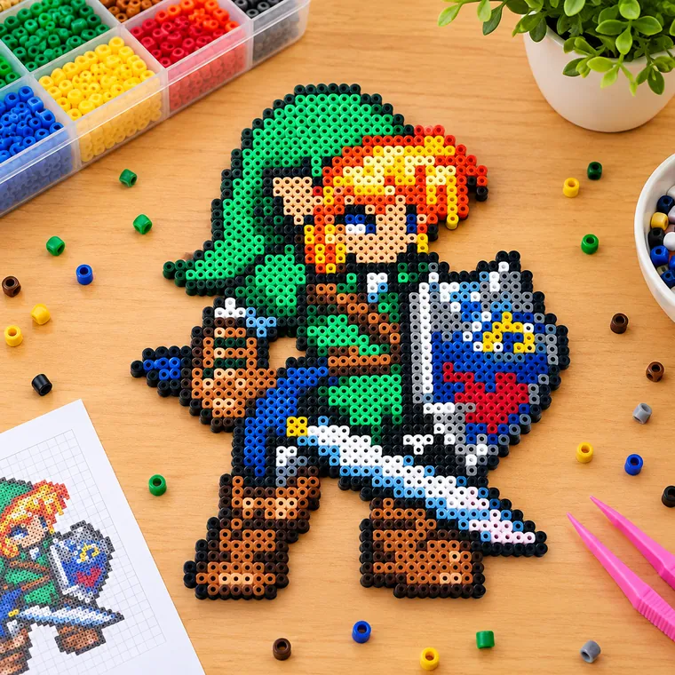
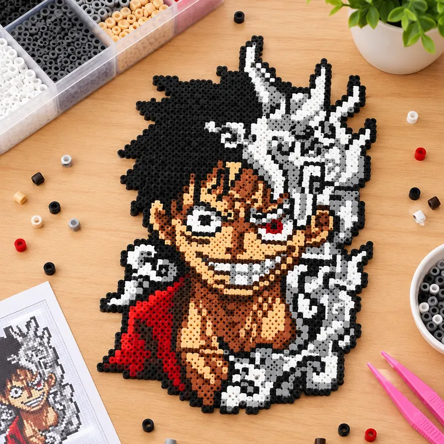
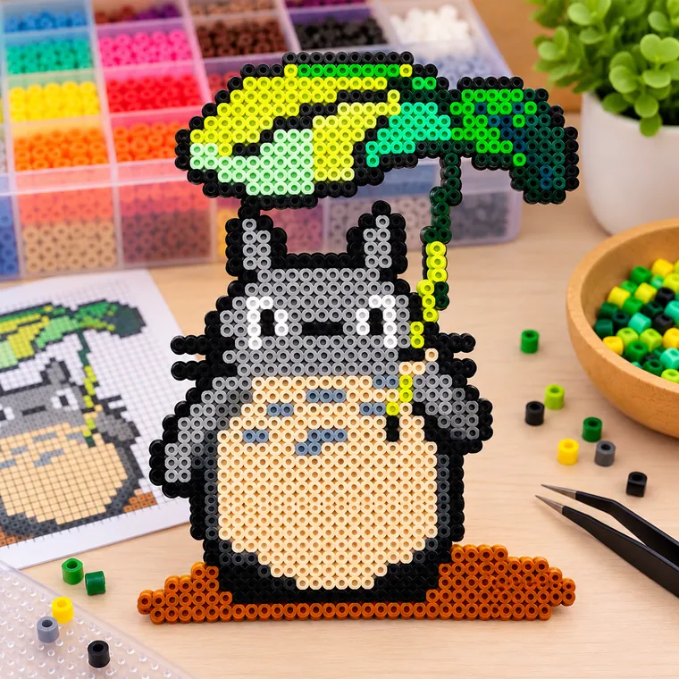
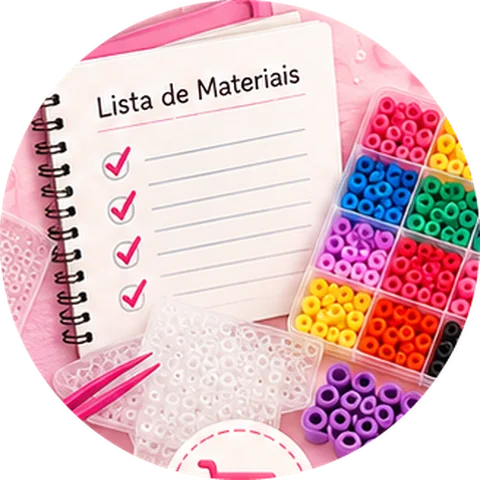
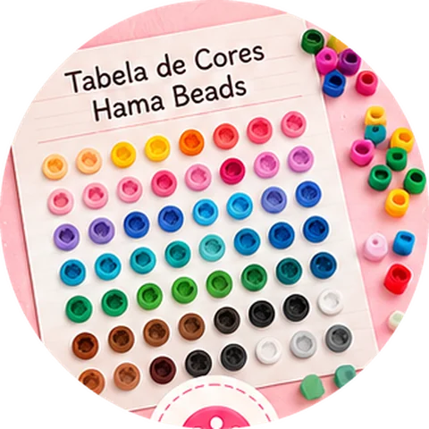
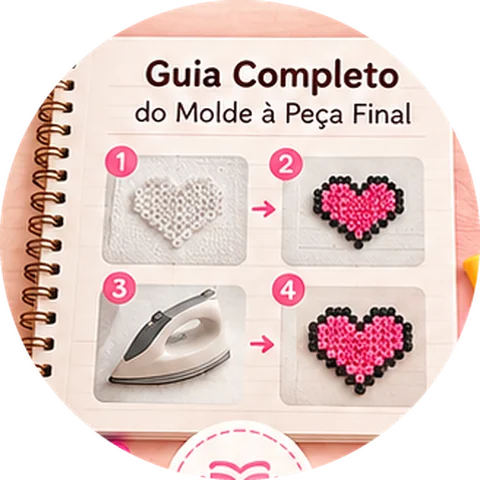

Animes
Personagens do universo dos animes.
Personagens, animes, games, bichinhos, comidas e datas especiais reunidos num único arquivo, organizado por categorias. Abriu, escolheu, montou.



Em vez de perder tempo garimpando imagens espalhadas pela internet, você abre sua coleção, escolhe um modelo e já começa a separar as cores.
São mais de 1000 opções para variar suas criações sem repetir sempre os mesmos desenhos.
Visual em pixel art, com a grade e as cores do desenho para você seguir conta por conta.
Chaveiros, ímãs e lembrancinhas com o personagem favorito de quem você ama.
Abra a categoria que quiser, escolha seu próximo projeto e use o molde como guia para montar conta por conta.
E muito mais temas dentro da coleção.
Você recebe os moldes em PDF. Consulta no aparelho que quiser e imprime só os que for montar.
Variedade para escolher sempre um projeto novo.
Menos tempo procurando, mais tempo criando.
Você vê onde vai cada conta e cada cor.
O arquivo é seu, use quantas vezes precisar.
Sem precisar desenhar nada e sem complicação.
Acesse o arquivo e navegue pelas categorias até achar o desenho que quer fazer.
Siga o molde na tela ou imprima e coloque embaixo da placa transparente.
Acompanhe a grade e as cores, passe o ferro e sua peça está pronta.


Agora cada continha tem destino. Escolha um molde e comece hoje.
Uma atividade manual e divertida que prende a atenção por horas.
Chaveiros e lembrancinhas com o personagem favorito de cada pessoa.
Montar conta por conta acalma a cabeça e o resultado fica lindo.
Não precisa saber desenhar. É só seguir a grade e as cores.
Mais de 1000 opções para nunca repetir o mesmo desenho.
Materiais extras para começar com segurança e caprichar no acabamento de cada peça.

Tudo o que você precisa para começar com o pé direito e onde encontrar: placas, contas, pinça, papel e ferro.

Todas as cores organizadas para você escolher as combinações certas e acertar o tom de cada molde.

O passo a passo completo, com as dicas para passar o ferro do jeito certo e deixar a peça firme e bonita.
Pagamento único. Sem mensalidade.
Abra o arquivo, escolha seus moldes e monte. Se por qualquer motivo achar que não é para você, é só pedir o reembolso em até 7 dias e devolvemos 100% do valor. Sem perguntas.